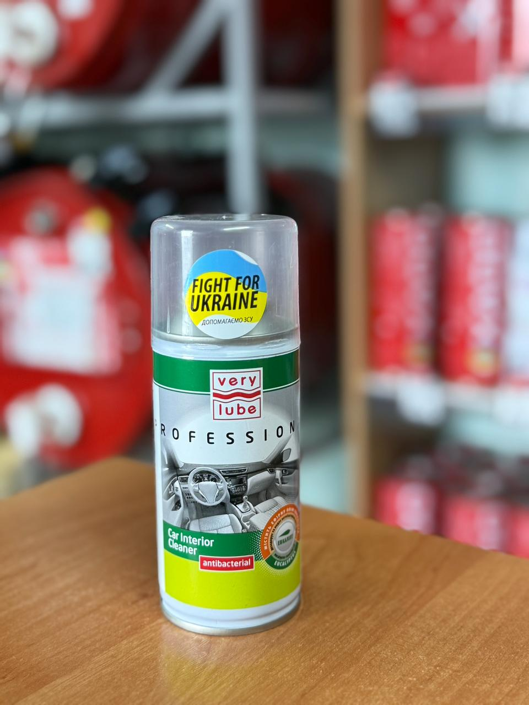

Антибактеріальний очисник салону та вентиляції VERYLUBE 100 мл
Ціна: 160 грн
Об’єм: 100 мл
Зручний у використанні засіб (типу "шашка") для комплексної антибактеріальної обробки всього інтер'єру та кліматичної системи автомобіля. Він миттєво знищує шкідливі мікроорганізми, віруси та бактерії, які скупчуються у важкодоступних місцях повітропроводів. Одночасно працює як потужний дезодорант, нейтралізуючи найстійкіші неприємні запахи (тютюн, вогкість, їжа) і залишаючи після себе відчуття свіжості.
- Глибоко дезінфікує систему вентиляції та кондиціювання без розбирання панелі.
- Очищає повітря в салоні та нейтралізує джерела неприємних ароматів.
- Процедура очищення займає всього кілька хвилин і не потребує спеціальних навичок.
Інструкція із застосування
- Заведіть двигун автомобіля.
- Повністю відкрийте всі дефлектори (повітропроводи) на приладовій панелі.
- Важливо: увімкніть систему вентиляції на максимальну потужність та обов'язково активуйте режим рециркуляції повітря (забір повітря зсередини салону, а не з вулиці).
- Щільно закрийте всі вікна та двері.
- Енергійно струсіть балон і зніміть фіксуюче кільце з розпилювача.
- Поставте балон вертикально по центру салону (найкраще — на підлокітник або центральну консоль).
- Натисніть на кнопку клапана до характерного клацання і трохи поверніть за годинниковою стрілкою, щоб зафіксувати його у відкритому положенні.
- Одразу ж вийдіть з машини та щільно зачиніть за собою двері.
- Зачекайте 3–5 хвилин, поки засіб повністю розпилиться і проциркулює через систему.
- Після завершення процедури обов'язково відчиніть двері та ретельно провітріть салон перед поїздкою.
Поради щодо догляду
- Для підтримання здорового мікроклімату рекомендується проводити таку профілактичну обробку за потреби, але не рідше двох разів на рік (оптимально — перед початком активного використання кондиціонера влітку та обігрівача взимку).
← Назад до каталогу